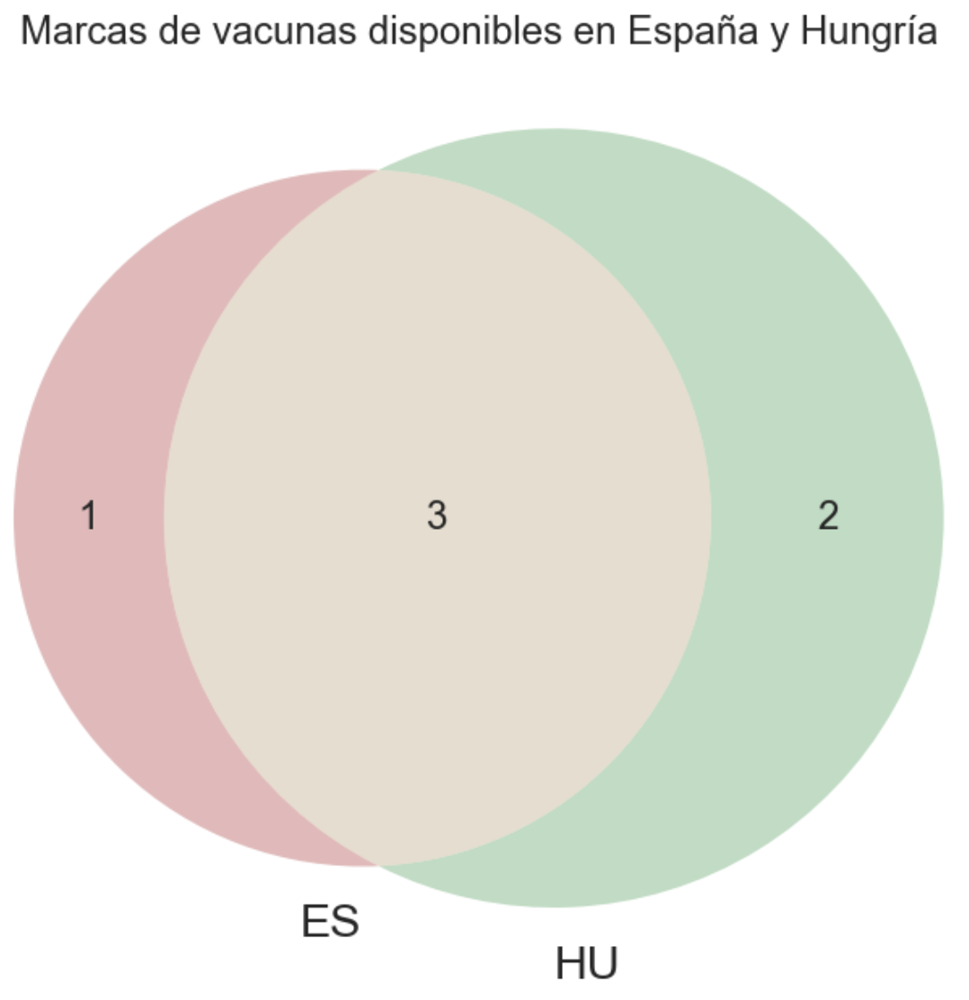

Diagrama Venn
Nombre: Pie Chart - Diagrama de Pastel o Tarta
Origen: John Venn, 1880.
Descripción: Mustran relaciones entre conjuntos. Se pueden representar datos cuantitativos y cualitativos. Máximo 4 conjuntos.
Ejemplos de aplicación: A month city bike, New Yorker
Uso de redes sociales
